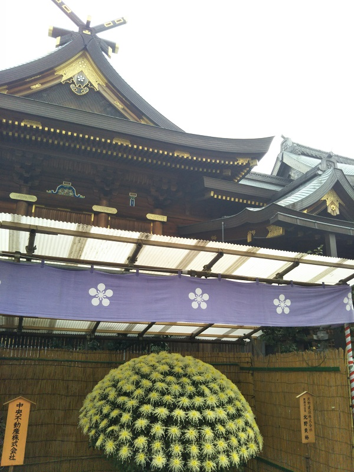

湯島天満宮 四季→秋 エリア→東京東部

このスポットには
458年に雄略天皇の名によって建立された神社。祭神は岩に隠れてしまった天照大神を救いだした力の強い大地の神・天之手力雄命と醍醐天皇の右大臣を務めた詩歌に優れた学者の菅原道真公。通称湯島天神の名で学問の神様として親しまれ、受験生が行列するお参りスポットでもあります。泉鏡花の「婦系図」でも取り上げられ、菊の鉢植えや菊人形を見に多くの人が訪れます。都内有数のパワースポットとしても知られています。
公式サイト→http://www.yushimatenjin.or.jp/pc/index.htm
このスポットには
こんな歴史が・・・
江戸時代から周囲には芸者茶屋や色子茶屋が立ち並び、役者小屋もあり大道芸人も多く、粋で賑わった場所のひとつだった。
所在地
東京都文京区湯島3-30-1
最寄り駅
東京メトロ千代田線湯島駅、銀座線上野広小路駅